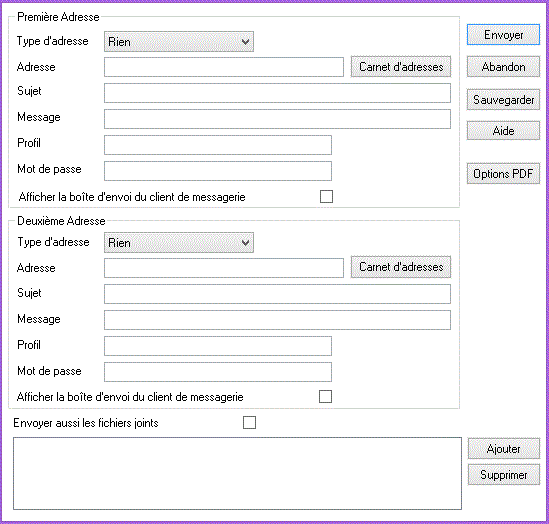

DivaltoViewer permet d'envoyer l'état vers un fax ou une messagerie électronique par le choix <Fichier : Envoyer vers ...> du menu <Fichier>.
Ce choix affiche la boîte de dialogue suivante :

Remarque : On peut envoyer un état à deux destinataires à la fois, c'est pourquoi cette boîte de dialogue possède deux blocs de champs, un pour la première adresse et un pour la deuxième adresse.
Type d'adresse
Contient le type de l'adresse qui se trouve dans le champ Adresse. Une adresse peut être de type :
Rien : cette valeur indique que cette adresse ne doit pas être prise en compte.
Fax : le champ Adresse doit alors contenir le numéro de fax du destinataire.
Exemple : "03 88 01 02 03"
Mail : le champ Adresse doit alors contenir l'adresse Mail du destinataire.
Exemple : "Pierre"
E-Mail : le champ Adresse doit alors contenir l'adresse Internet du destinataire.
Exemple : "paul@wanadoo.fr"
Autre : le champ Adresse doit alors contenir l'adresse du destinataire dont le type n'appartient pas aux types définis ci-dessus.
Fax 2, Mail 2, E-Mail 2, Autre 2 sont identiques aux types précédents ; ils permettent d'utiliser un deuxième type de transport de messagerie (Cf. rubrique Paramétrage de DivaltoViewer).
AdresseDirecte : le champ Adresse doit alors contenir l'adresse exacte du destinataire ainsi que le type de transport du message.
Lorsqu'on utilise le bouton Carnet d'adresses, le type d'adresse passe automatiquement au type "AdresseDirecte" car DivaltoViewer récupère alors l'adresse du destinataire ainsi que le type de transport du message.
Adresse
Ce champ contient l'adresse du destinataire. Le bouton Carnet d'adresses permet d'aller chercher l'adresse du destinataire dans le carnet d'adresses du client de messagerie.
Sujet
C'est le sujet du message. Ce texte apparaîtra dans la liste des messages du client de messagerie.
Message
Ce champ peut contenir un texte qui sera ajouté au message. Attention, si l'adresse est de type "Fax", ce texte sera imprimé sur la première page du fax, le contenu du fichier de DivaltoViewer en cours sera imprimé à partir de la deuxième page.
Profil et Mot de passe
DivaltoViewer utilise le profil par défaut défini dans le client de messagerie ou dans les paramètres de base de DivaltoViewer (Cf. rubrique Paramétrage de DivaltoViewer). On peut utiliser un autre profil à condition de l'avoir créé préalablement dans le client de messagerie. Le champ "Mot de passe" doit contenir alors le mot de passe de ce profil.
Afficher la boîte d'envoi du client de messagerie
De manière générale, DivaltoViewer envoie directement les messages. Si cette case est cochée, DivaltoViewer appellera la boîte d'envoi de messages du client de messagerie avant d'envoyer les messages. Cela permet de modifier l'adresse du destinataire ou de mettre plusieurs destinataires.
On peut aussi utiliser cette option pour saisir un texte plus grand que celui du champ Message.
Envoyer aussi les fichiers joints
Cochez cette case si vous désirez que votre envoi soit accompagné de « fichiers joints ». Pour joindre un fichier, cliquez sur le bouton "Ajouter". Pour supprimer un fichier de la liste des fichiers joints, sélectionnez-le et cliquez sur le bouton "Supprimer". Il est possible de joindre jusqu’à quinze fichiers.
Remarques :
Si vous voulez n’inclure aucun fichier joint, il suffit de décocher cette case.
La liste des fichiers joints peut être sauvegardée si vous cliquez sur le bouton "Sauvegarder". Ainsi, vous pouvez conserver cette liste de fichiers en cas de renvoi ultérieur.
Un fichier peut être joint à l'envoi d'un fax, à condition que son nom comporte une extension associée à un programme capable de l'imprimer. Par exemple :
- Vous pouvez faxer un fichier .xls si Excel est installé sur votre ordinateur.
- Vous pouvez faxer un fichier .doc créé avec Word ou un fichier .pdf créé avec Acrobat Reader.
Après avoir saisi l'un ou les deux blocs d'adresse, vous pouvez :
Sauvegarder ces informations dans le fichier DivaltoViewer en cliquant sur le bouton Sauvegarder.
Envoyer le fichier DivaltoViewer en cliquant sur le bouton Envoyer.
Sortir de la boîte de dialogue en cliquant sur le bouton Abandon.